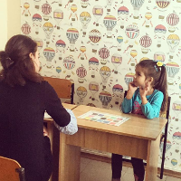

Логопед
Програми:
Консультації логопеда Логоритміка
Консультації логопеда - У нашому центрі Ви зможете отримати консультацію та відповідні послуги дитячого логопеда. Це висококваліфікований дипломований спеціаліст з великим стажем роботи.
Звернувшись до нас, Ви отримаєте професійну логопедичну допомогу за такими напрямками:
- Виправлення порушень звуковимови (постановка звуків);
- Корекція мовних порушень різного ступеня тяжкості ( у дітей від 4 років);
- Виправлення порушень письма та читання;
- Робота з фонетико-фонематичними порушеннями мовлення.
Логопед обстежить Вашу дитину, зробить детальний аналіз стану мовленнєвого розвитку. У разі необхідності, буде розроблена спеціальна програма та призначені індивідуальні заняття, спрямовані на попередження або усунення мовних проблем.
Логоритміка - унікальне заняття, що поєднує в собі логопедичні вправи із цікавими музичними завданнями.
Ідеально підходить для діток, яким потрібно:
- Відкоригувати дикцію;
- Прибрати "шипелявість";
- Навчитися правильно дихати при розмові;
- Додати у вимову динаміку та інтонацію;
- Знайти "свій темп" мови;
- Зрозуміти і відчути "ритм" слова, речення, віршового рядка.
Заняття проводяться щосуботи для дітей віком від 4-х років.